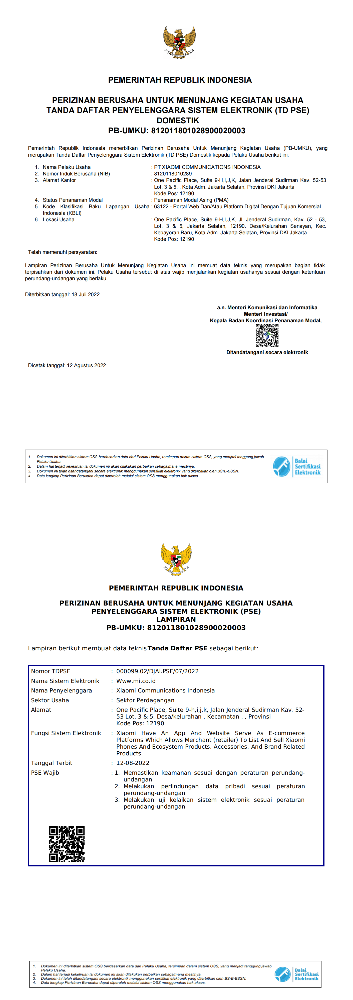

Ini adalah Perjanjian Penggunaan Situs untuk Pembelian Produk Xiaomi melalui Sistem Elektronik (“Perjanjian”) antara Anda yang berarti semua individu, badan hukum serta badan usaha (“Pengguna”) selaku pembeli dan PT Xiaomi Communications Indonesia selaku Penyelenggara Perdagangan melalui Sistem Elektronik (“PPMSE”).
Ini adalah Perjanjian Penggunaan Situs untuk Pembelian Produk Xiaomi melalui Sistem Elektronik (“Perjanjian”) antara Anda yang berarti semua individu, badan hukum serta badan usaha (“Pengguna”) selaku pembeli dan PT Xiaomi Communications Indonesia selaku Penyelenggara Perdagangan melalui Sistem Elektronik (“PPMSE”).
Kami, PT Xiaomi Communications Indonesia adalah suatu badan hukum yang didirikan serta tunduk berdasarkan hukum Republik Indonesia, berkedudukan di One Pacific Place, Suite 9 H-K, Jl. Jenderal Sudirman, Kav. 52 – 53, Lot 3 & 5, Jakarta Selatan, 12190, Indonesia (untuk selanjutnya disebut sebagai “PT XCI”).
Sebagaimana telah dinyatakan di atas, PT XCI merupakan PPMSE dengan situs www.mi.co.id dan/atau www.mi.com/id (untuk selanjutnya disebut sebagai “Situs”).
PT XCI adalah Pelaku Usaha yang menyediakan sarana komunikasi elektronik untuk transaksi Perdagangan berbagai produk Xiaomi, Mi, Redmi dan POCO (“Produk”) termasuk namun tidak terbatas memberikan informasi terkait dengan program atau kegiatan, penempatan pesanan, dan hal-hal terkait lainnya (“Jasa”) telah memiliki izin sesuai ketentuan peraturan perundang-undangan, yang diterbitkan oleh Kementerian Komunikasi dan Informatika Republik Indonesia untuk Perdagangan melalui Sistem Elektronik (PMSE) dan Kementerian Perdagangan Republik Indonesia untuk Surat Izin Usaha Perdagangan Melalui Sistem Elektronik (SIUPMSE) (terlampir).
Selanjutnya, PT Xiaomi Retail Indonesia, suatu badan hukum yang didirikan dan tunduk berdasarkan hukum Republik Indonesia, berkedudukan di One Pacific Place, Suite 9 L-N, Jl. Jenderal Sudirman, Kav. 52 – 53, Lot 3 & 5, Jakarta Selatan, 12190, Indonesia (untuk selanjutnya disebut sebagai “PT XRI”), yang bertindak sebagai pedagang (merchant) atau pengecer yang menjual berbagai Produk melalui Situs.
Khusus terkait dengan transaksi jual beli Produk, dilakukan oleh dan di antara Pengguna dan PT XRI selaku pengecer melalui sarana (Situs) yang dimiliki oleh PT XCI.
Berdasarkan hal tersebut di atas, PT XCI bukan penjual Produk. Penjual Produk tersebut di atas adalah PT XRI sedangkan PT XCI hanya sebatas pihak penyedia atau pengelola Situs (PPMSE).
PT XCI mohon agar setiap Pengguna membaca Perjanjian ini terlebih dahulu dengan seksama sebelum memutuskan untuk menerima atau menolak ketentuan Perjanjian ini. Sehingga, Pengguna diharapkan telah memahami seluruh ketentuan, termasuk namun tidak terbatas pada ketentuan-ketentuan atas Pembebasan Jaminan, Batasan Tanggung Jawab, dan Hak serta Pembatasan yang akan diatur lebih lanjut di bawah ini.
Lebih lanjut, untuk anak di bawah umur wajib didampingi oleh wali hukumnya dalam membaca Perjanjian serta dalam melakukan transaksi pembelian Produk. PT XCI selaku pengelola situs dapat menangguhkan atau menghentikan penyediaan Produk dan Jasa kepada Pengguna jika Pengguna tidak mematuhi ketentuan atau kebijakan kami.
Dengan mendaftar, memasuki, menggunakan Situs, Jasa maupun tindakan lainnya, Anda selaku Pengguna mengakui bahwa Pengguna telah membaca dan memahami, serta setuju untuk menerima dan terikat dengan seluruh syarat dan ketentuan Perjanjian ini.
Lebih lanjut, dengan menerima Perjanjian ini, maka Pengguna setuju untuk menerima semua pembatasan, termasuk menerima bahwa PT XCI berhak untuk mengubah ketentuan penggunaan Situs dalam Perjanjian ini sewaktu-waktu, tanpa terlebih dahulu melakukan pemberitahuan kepada Pengguna.
Pengguna dapat memasuki atau melakukan login pada halaman Situs dan Jasa PT XCI setiap saat untuk memeriksa Perjanjian Pengguna yang terbaru. Jika Pengguna tidak dapat menerima isi apapun yang telah PT XCI ubah, Pengguna harus berhenti menggunakan Situs. Dengan tetap terus menggunakan Situs dan Jasa, Pengguna telah setuju untuk menerima dan terikat oleh perubahan ketentuan Perjanjian ini.
Pengguna dapat mengunjungi Situs tanpa registrasi. Namun, Pengguna membutuhkan Akun Mi ("Akun") dan memberikan informasi pribadi yang relevan pada halaman Situs dan Jasa pada proses pendaftaran untuk mengakses lebih lanjut. Pengguna dapat menghapus atau menangguhkan akun Pengguna sesuai dengan instruksi dari Situs, dan PT XCI akan menyimpan atau menghapus Akun Pengguna berdasarkan Perjanjian ini.
Pengguna dengan ini berjanji, dan akan melakukan hal-hal berikut:
Pengguna mengerti dan setuju bahwa Situs merupakan produk jasa aplikasi. Pengguna akan bertanggung jawab penuh untuk keaslian, legalitas, akurasi dan validitas informasi pendaftaran Pengguna; Pengguna juga harus bertanggung jawab untuk memperbarui setiap perubahan informasi pendaftaran Pengguna untuk tetap terbaru (up to date); Pengguna tidak akan mengirim informasi dengan nama orang lain; Pengguna tidak akan menggunakan akun terdaftar untuk kejahatan; jika tidak, PT XCI berhak untuk menangguhkan semua kegiatan terkait dengan penggunaan Akun, Situs, Jasa dan pembelian Produk. Pengguna akan sepenuhnya menanggung semua tanggung jawab hukum. Kami, PT XCI dan/atau afiliasinya tidak memiliki tanggung jawab atau kewajiban apapun atas klaim atau kerugian apapun yang timbul dari tindakan Pengguna.
Pengguna harus menggunakan Situs sesuai dengan semua ketentuan perundang-undangan yang berlaku dan bertanggung jawab penuh untuk setiap kegiatan sesuai Akun terdaftar Pengguna, termasuk pernyataan Pengguna dan kerugian atau kerusakan yang mungkin timbul secara langsung atau tidak langsung atas pernyataan Pengguna. Pengguna harus memperkirakan risiko isi konten oleh Pengguna sendiri dan menerima semua risikonya, termasuk risiko yang terkait dengan kebenaran, integritas atau praktek dari isi konten. Kami, PT XCI dan/atau afiliasinya tidak akan bertanggung jawab atas setiap kerugian atau kerusakan yang timbul dari perilaku atau kegiatan ini.
Pengguna memiliki kewajiban untuk menjaga informasi pendaftaran di Situs dan bertanggung jawab untuk semua kegiatan. Pengguna harus segera memberitahukan PT XCI jika Pengguna menemukan kegiatan ilegal atau tidak sah. PT XCI tidak akan bertanggung jawab atas kerusakan atau kerugian yang timbul dari ketidakpatuhan Pengguna dengan setiap ketentuan manapun di atas.
Semua pernyataan Pengguna pada Situs merupakan informasi publik yang dapat diakses oleh pihak ketiga. Setiap pernyataan yang dimuat di Situs akan dianggap sebagai informasi publik, dan Pengguna harus menerima tanggung jawab hukum untuk tindakan tersebut. Jika Pengguna tidak ingin pihak ketiga untuk mendapatkan pernyataan Pengguna, mohon tidak memuat pernyataan tersebut di Situs.
Pengguna juga harus memahami dan dengan ini mengakui hal-hal berikut:
Pengguna menerima bahwa sehubungan dengan pengembangan bisnis, PT XCI dapat mengubah, menangguhkan, membatasi, menghentikan atau mencabut hak-hak penggunaan Situs dan Jasa PT XCI setiap saat tanpa pemberitahuan.
PT XCI dapat menyertakan iklan, dan lain-lainnya pada Situs PT XCI. Pengguna menyetujui tampilan iklan dan acara-acara lainnya dari PT XCI atau pihak terkait ketika mengakses Situs dan Jasa PT XCI.
PT XCI berhak untuk menangguhkan Jasa, sepenuhnya menurut kebijakan atau keputusan PT XCI, setiap konten apapun yang melanggar hukum dan peraturan di wilayah hukum atau ketentuan apapun pada Perjanjian ini; yang melanggar, berprasangka, mengancam hak atau keamanan apapun; atau meniru yang lain. PT XCI juga berhak untuk mengambil tindakan hukum yang tepat, termasuk namun tidak terbatas pada menghapus setiap konten apapun yang ilegal atau melanggar, menangguhkan kualifikasi pelanggar dan menyimpan informasi yang terkait dan melaporkan kepada pihak berwenang yang relevan berdasarkan undang-undang dan peraturan yang berlaku.
Ketika Pengguna berbelanja di Situs, Pengguna hanya dapat memodifikasi informasi berikut untuk menjaga keamanan akun tersebut: nama, alamat dan nomor telepon. Jika Pengguna membutuhkan bantuan, dengan menggunakan nomor telepon yang Pengguna masukkan di dalam pesanan. Setiap panggilan dari nomor lain selain yang tercantum dalam pesanan akan memerlukan konfirmasi.
Konten Pengguna adalah semua konten (informasi, gambar, musik Pengguna atau yang lainnya) sebagai hasil dari pegunduhan (download), mengeluarkan/melepaskan atau kegiatan lainnya melalui Situs. Pengguna sepenuhnya bertanggung jawab untuk konten tersebut, dan menanggung semua risiko yang timbul dari pengungkapan Pengguna sebagai Pengguna Konten tersebut.
Setelah Pengguna mengunggah, mengeluarkan/melepaskan atau terlibat dalam kegiatan melalui Situs dan Jasa, Pengguna secara otomatis memberikan kepada Xiaomi lisensi global gratis yang tidak dapat ditarik kembali, tidak eksklusif, yang dapat di sub-lisensikan kembali, dan yang dapat dialihkan untuk:
Menyediakan Pengguna dengan Produk dan Jasa atau untuk tujuan meningkatkan Produk dan Jasa melalui penggunaan Konten Pengguna oleh PT XCI. PT XCI dan/atau afiliasinya juga dapat menyalin, mempublikasikan, menampilkan, membuat karya derivatif/turunan dan/atau membawanya ke karya lain, atau menggunakan Akun Pengguna (kecuali informasi pribadi Pengguna) dengan cara lain; dan Pengguna memberikan wewenang kepada PT XCI dan/atau afiliasinya izin yang dapat dialihkan untuk hal sebelumnya; Menyalin dan mempublikasikan konten dan informasi pribadi Pengguna hanya untuk penerima yang ditunjuk; Pengguna setuju bahwa secara tidak dapat ditarik kembali Pengguna melepaskan setiap dan semua kepemilikan, hak hukum dan moral konten Pengguna.
Pengguna memiliki hak untuk menggunakan Situs secara legal.
Pengguna memiliki hak untuk mengunggah, mengunduh, memasang (install), dan menggunakan Situs pada perangkat komunikasi ponsel (mobile).
PT XCI dan perusahaan-perusahaan terkaitnya adalah pemilik Akun Xiaomi. Pengguna memiliki hak untuk menggunakan Akun setelah Pengguna menyelesaikan proses pendaftaran Pengguna. Hak untuk menggunakan Akun hanya diberikan untuk Pengguna, dan Pengguna tidak diizinkan untuk meminjami, meminjam, menyewa, melisensikan, mengalihkan, menghadiahkan atau menjual Akun. PT XCI memiliki hak untuk mengambil Akun apapun untuk kebutuhan operasional.
Pengguna memiliki hak untuk mengubah dan menghapus informasi pribadi, informasi yang terdaftar, dan konten apapun yang telah dipasang. Harap dicatat bahwa Pengguna mengetahui adanya risiko atas setiap gambar atau kata yang disimpan di dalam sistem dapat juga terhapus ketika Pengguna menghapus informasi yang terkait.
Pengguna bertanggung jawab atas keamanan informasi dan kata sandi (password) Akun Pengguna, dan harus bertanggung jawab secara hukum untuk kegiatan Akun terdaftar. Pengguna setuju untuk tidak menggunakan kata sandi dan Akun orang lain dalam keadaan apapun. Pengguna setuju untuk segera memberitahukan kepada PT XCI bila Pengguna menduga ada orang lain yang menggunakan kata sandi atau Akun Pengguna.
Pengguna tidak akan menjual, menyewakan, mengalihkan, melepaskan atau melakukan penggunaan komersial lainnya dari konten Situs atau produk-produk dan Jasa-Jasa PT XCI (termasuk namun tidak terbatas pada konten atau iklan atau konten yang disponsori); Pengguna tidak boleh mengunjungi Situs atau menggunakan Jasa PT XCI untuk membangun Jasa yang serupa atau Jasa saingan; Kecuali ditentukan secara tegas oleh undang-undang, Pengguna tidak diperkenankan untuk menyalin, mempublikasikan, mengunduh, mengubah, menerjemahkan, menggabungkan, menguraikan, dan menempelkan atau mendekompilasi dan lainnya atas bagian manapun dari Situs atau Jasa PT XCI (termasuk namun tidak terbatas pada konten atau iklan atau konten yang disponsori) dengan cara apapun; Pengguna setuju untuk menanggung semua risiko dan mengambil tanggung jawab hukum penuh untuk kegiatan-kegiatan berikut saat menggunakan Situs: Menentang prinsip-prinsip dasar yang ditetapkan dalam Undang-Undang Dasar yang berlaku dan peraturan lainnya; Membahayakan keamanan nasional, membocorkan rahasia negara, mengganggu pemerintah, dan merusak persatuan nasional; Merusak kehormatan dan kepentingan nasional; Mendorong kebencian etnis atau diskriminasi etnis, dan merusak persatuan nasional; Mengganggu kebijakan agama nasional, mempromosikan kultus dan takhayul; Menyebarkan kabar angin, mengganggu tatanan sosial, merusak stabilitas sosial; Menyebarkan hal-hal yang cabul, pornografi, perjudian, kekerasan, pembunuhan, terorisme atau menghasut orang lain untuk melakukan kejahatan; Menghina atau memfitnah orang lain, melanggar atas hak-hak hukum dan kepentingan orang lain; Semua konten lainnya yang dilarang oleh peraturan perundangan dan hukum. Pengguna tidak akan menggunakan Situs atau Jasa PT XCI untuk terlibat dalam perilaku atau kegiatan apapun yang dinyatakan di bawah ini: Mengunggah atau melepaskan virus, worm, dan malware untuk merusak atau mengubah sistem atau data komputer; Mengumpulkan informasi atau data pengguna lain, seperti alamat email, tanpa otorisasi; Menonaktifkan koneksi jaringan Situs, membuat Situs agar terlalu banyak menangani, mengganggu atau merusak server dan koneksi Situs web dengan cara-cara lain; Mencoba untuk mengunjungi Situs, server PT XCI atau koneksi Situs tanpa otorisasi; Mengganggu atau merusak penggunaan normal Situs dan Jasa PT XCI.
Pengguna memahami dan setuju bahwa Situs PT XCI didasarkan pada dukungan teknis dari pihak ketiga seperti Android, dan lainnya. PT XCI memahami dan menyetujui bahwa PT XCI dapat memberikan sejumlah data pribadi Pengguna kepada pihak ketiga tersebut dalam rangka menerima dukungan teknis atau dukungan lain dari mereka. Pengguna setuju dan memberikan wewenang kepada PT XCI untuk membatasi hak-hak Pengguna dalam menggunakan Situs dan Jasa. Pengguna Konten berarti konten yang diunduh, dirilis atau dihasilkan saat menggunakan Situs dan Jasa PT XCI oleh Pengguna. Pengguna harus bertanggung jawab secara hukum untuk pengungkapan konten yang disebabkan oleh Pengguna. Ketika Pengguna mengunjungi Situs dan iklan dari pihak ketiga, ketentuan-ketentuan dan kebijakan pihak ketiga akan berlaku. Pengguna akan menanggung semua risiko dan tanggung jawab hukum ketika Pengguna menggunakan Jasa-Jasa pihak ketiga. Situs PT XCI termasuk konten yang disediakan oleh pengguna lain; dan interaksi antara Pengguna dan pengguna lain hanya menjadi milik Pengguna dan pengguna lain. PT XCI tidak mengendalikan Konten Pengguna, menanggung tanggung jawab hukum, atau berkewajiban untuk memeriksa, memantau, meneliti dan menyetujui Konten Pengguna tersebut. Dengan demikian, Pengguna menerima tanggung jawab hukum untuk risiko-risiko interaksi tersebut.
Pengguna setuju untuk menggunakan Situs dan Jasa dengan baik dan membantu PT XCI untuk menghindari setiap gugatan, keluhan, kerugian, kerusakan, tanggung jawab, biaya dan ongkos (termasuk namun tidak terbatas pada biaya pengacara) dari pihak ketiga yang disebabkan oleh penggunaan Situs atau Jasa, konten Pengguna, pelanggaran Pengguna terhadap Perjanjian ini. PT XCI memiliki hak yang eksklusif untuk mempertahankan dan hak untuk mengklaim kompensasi. Pengguna Konten mengacu pada semua konten (informasi, gambar, musik Pengguna atau yang lainnya) hasil dari unduh, melepaskan/mengeluarkan atau kegiatan lainnya melalui Situs dan Jasa PT XCI.
Pengguna bertanggung jawab penuh untuk konten tersebut, dan menanggung semua risiko hasil dari pengungkapan konten Pengguna. Pengguna tidak akan secara sepihak menyelesaikan pada saat Pengguna dan PT XCI bersama-sama mengajukan gugatan terhadap pihak ketiga apapun tanpa persetujuan tertulis dari PT XCI. PT XCI akan sepatutnya memberitahu Pengguna akan gugatan atau tindakan hukum tersebut. Dalam kondisi apapun, PT XCI tidak akan menanggung kompensasi tidak langsung, konsekuensial, secara berlebihan, insidental, luar biasa atau yang bersifat hukum yang terkait dengan Perjanjian ini. Pengguna menanggung semua risiko dari penggunaan sistem komputer dan database komunikasi ponsel melalui Situs.
PT XCI tidak memiliki kewajiban hukum dalam keadaan-keadaan yang dinyatakan di bawah:
Memberikan informasi pribadi Pengguna yang diminta oleh departemen pemerintah atau undang-undang; Mengungkapkan informasi pribadi yang disebabkan oleh tindakan kelalaian Pengguna; Setiap keadaan yang disebabkan oleh penghentian, kerusakan dan sebagainya sebagai akibat dari peretasan (hacking), serangan virus, pemberhentian karena konten yang ilegal dan melecehkan, pengendalian pemerintah atau alasan lain yang berkaitan dengan jaringan, teknik, jalur komunikasi dan manajemen keamanan informasi;Menyebabkan kerugian kepada pengguna karena pihak ketiga apapun, seperti kerusakan jalur komunikasi, masalah teknis, kerusakan jaringan dan komputer, dan kasus-kasus keadaan kahar lainnya; Risiko-risiko yang timbul dari ancaman, pencemaran nama baik, informasi yang menyerang atau ilegal yang disebabkan oleh anonim atau perkolasi melalui Situs PT XCI; Kerugian psikologis atau fisik yang diderita dan kerugian ekonomi karena penyesatan atau penipuan ketika Pengguna berinteraksi dengan orang lain melalui Situs.
Situs atau produk-produk dan Jasa PT XCI secara jelas menyatakan bahwa PT XCI tidak menjamin ketepatan waktu, keamanan dan ketepatan Jasa secara tegas, tersirat atau dalam bentuk lain. Di samping itu, jasa "Pengenalan Nomor Telepon secara Intelijen," di mana Jasa "Pengenalan Nomor Telepon secara Intelijen" mengacu pada jasa yang mengenali nomor telepon yang berasal dari panggilan masuk dan keluar atau pesan teks. PT XCI akan mengunggah nomor tersebut ke servernya, oleh karena itu mengidentifikasi "Informasi Ditandai" dari nomor tersebut. Data dan informasi dalam jasa ini akan sangat dilindungi, dan kami memastikan bahwa Pengguna tidak akan dapat diidentifikasi sebagai akibat dari unggahan informasi tersebut. Informasi Ditandai tersebut disediakan oleh Pengguna atau mitra jaringan. PT XCI menggunakan sarana teknis untuk memastikan bahwa (i) Informasi Ditandai tersebut konsisten dengan informasi yang diunggah oleh banyak pengguna selama jangka waktu tertentu (misalnya, ketika bagian informasi dari nomor telepon yang asing adalah “telepon penipuan yang ditandai oleh 500 orang”, yang menunjukkan bahwa sejumlah besar Pengguna menetapkan bahwa nomor telepon itu adalah penipuan dan memperbarui Informasi Ditandai dalam suatu jangka waktu); (ii) menyaring dan memilih Informasi Ditandai yang paling dapat diandalkan, dan menunjukkan sumber informasi tersebut kepada Pengguna. Sementara itu, PT XCI menyediakan pilihan bagi Pengguna untuk mengirimkan tanggapan tentang Informasi Ditandai.
Setiap konten yang dikirim oleh Pengguna pada Situs tidak mewakili atau mencerminkan pandangan atau kebijakan apapun dari PT XCI; PT XCI tidak memiliki tanggung jawab apapun untuk hal itu. Dalam situasi apapun, PT XCI tidak bertanggung jawab untuk kerusakan tidak langsung, konsekuensial, secara berlebihan, insidental, luar biasa atau ganti rugi apapun, termasuk kerugian keuntungan yang disebabkan oleh penggunaan Jasa PT XCI. Terlepas dari ketentuan-ketentuan dalam Perjanjian ini, tanggung jawab yang PT XCI dan/atau afiliasinya tanggung tidak akan melebihi biaya yang Pengguna bayar kepada PT XCI (bila ada) selama berlakunya pendaftaran, untuk alasan apapun atau dengan cara apapun.
Setiap informasi yang dipasang di Situs atau platform interaktif tidak akan melanggar kekayaan intelektual dari pihak ketiga apapun. PT XCI tidak dapat mengunggah, melepaskan/mengeluarkan, mengubah, menyebarkan atau menyalin materi atau merek dagang apapun di bawah perlindungan hak cipta, atau informasi eksklusif dari pihak lain, tanpa persetujuan tertulis dari pemiliknya. Jika PT XCI dan/atau afiliasinya menerima pemberitahuan yang sesuai dari setiap pemilik hak cipta atau perwakilan hukumnya, PT XCI akan menghapus konten yang terkait setelah penyelidikan. Grafis, kata-kata dan komposisi yang melibatkan MIUI dan logo Xiaomi, Mi, Redmi, POCO dan lainnya yang muncul pada Produk dan Jasa PT XCI adalah merek dagang dari Xiaomi, Redmi, dan POCO. Tanpa persetujuan tertulis, Pengguna tidak dapat menampilkan atau menggunakannya dengan cara lain dalam cara apapun. Setiap entitas atau Pengguna tidak dapat dengan cara apapun menggunakan, menyalin, mengubah, menyebarkan, menuliskan setiap bagian dari merek dagang atau menjual secara gabungan (bundling) dengan produk-produk lain.
Selain ketentuan tersebut, Pengguna dapat segera menghubungi kami (lihat nomor kontak serta alamat email di bawah) jika Pengguna berpikir seseorang menyalin atau menerbitkan karya Pengguna pada Situs, dan juga melanggar hak cipta Pengguna. PT XCI berHarap agar Pengguna juga menyertakan informasi berikut di dalam pemberitahuan tertulis tersebut, antara lain: (i) keterangan-keterangan yang membuktikan bahwa Pengguna memiliki hak cipta atau Pengguna berwenang untuk melaksanakan hak cipta dari konten yang diduga melanggar; (ii) identifikasi, alamat dan informasi kontak Pengguna yang jelas; (iii) alamat jaringan konten yang diduga melanggar; (iv) uraian karya cipta yang diduga melanggar; (v) bahan yang membuktikan pelanggaran hak cipta Pengguna; (vi) berdasarkan alasan bahwa Pengguna setuju untuk menanggung semua konsekuensi dari sumpah palsu, Pengguna mengeluarkan pernyataan ketepatan dan keaslian konten pada pemberitahuan tertulis Pengguna.
Ketentuan-ketentuan Perubahan
PT XCI dapat mengubah atau memodifikasi ketentuan-ketentuan pada Perjanjian ini setiap saat, dan akan memberitahu Pengguna melalui alamat email atau pemberitahuan di Situs. Penggunaan Pengguna atas Situs PT XCI setelah dilakukan modifikasi ketentuan-ketentuan tersebut, menunjukkan bahwa Pengguna setuju dengan perubahan-perubahan tersebut; PT XCI berhak untuk memodifikasi, menjaga dan menghentikan Situs PT XCI tanpa pemberitahuan dari waktu ke waktu; Pengguna setuju bahwa PT XCI tidak akan bertanggung jawab untuk pengubahan, pemesanan atau penghentian Situs PT XCI, tindakan yang diambil oleh Jasa lain, atau pihak ketiga.
Pengakhiran
Perjanjian ini mulai berlaku dan tetap berlaku selama penggunaan Pengguna dari Situs PT XCI, hingga pengakhiran sesuai dengan Perjanjian ini. Terlepas dari ketentuan-ketentuan sebelumnya, Perjanjian ini mulai berlaku pertama kali Pengguna menggunakan Situs PT XCI jika hal itu terjadi sebelum Pengguna menerima Perjanjian ini. Perjanjian ini tetap berlaku kecuali pengakhiran sebelum waktunya. PT XCI dapat membatasi hak Pengguna untuk mengakses Situs dan akun Pengguna; PT XCI dapat mengakhiri Perjanjian ini setiap saat dengan alasan apapun tanpa pemberitahuan, bila PT XCI percaya bahwa Pengguna melanggar kebijakan PT XCI atau ketentuan-ketentuan lain dari Perjanjian ini.
Terlepas dari ketentuan sebelumnya, PT XCI berhak untuk mengakhiri Perjanjian ini jika Pengguna melanggar hak cipta pihak ketiga dan menerima pemberitahuan dari pemilik atau perwakilan hukum dari pemilik tersebut. Setelah Perjanjian ini diakhiri, semua Akun Pengguna dan hak Pengguna untuk menggunakan Situs juga akan diakhiri. Pengguna harus memahami bahwa ini berarti Konten Pengguna akan dihapus dari database PT XCI. PT XCI tidak akan bertanggung jawab atas pengakhiran Perjanjian ini, termasuk mengakhiri akun Pengguna dan menghapus Konten Pengguna. Revisi apapun dari Situs, pembaruan (update) atau perubahan lain dari PT XCI akan dibatasi oleh Perjanjian ini.
PT XCI berhak untuk menggunakan masukan dengan metode apapun yang sesuai. PT XCI juga mempertimbangkan masukan ini sebagai hal yang tidak rahasia dan tidak eksklusif. PT XCI setuju untuk tidak memberikan informasi apapun yang Pengguna anggap sebagai rahasia dan milik PT XCI. Kami berhak (bukan kewajiban) untuk memeriksa konten Pengguna berdasarkan penilaian PT XCI. PT XCI berhak untuk menghapus konten Pengguna kapan saja dengan alasan apapun. Menurut ketentuan Pengubahan dan Pengakhiran, PT XCI memiliki hak untuk membatasi atau mengakhiri akun Pengguna.
Harap tinjau Kebijakan Privasi kami, karena Kebijakan Privasi tersebut memiliki hak-hak yang setara dengan dan tak terpisahkan dari Perjanjian ini.
Pengguna harus memberikan alamat email yang berlaku, terbaru dan paling sering digunakan. PT XCI tidak akan bertanggung jawab jika PT XCI tidak dapat menghubungi Pengguna melalui alamat email yang Pengguna berikan. Tanpa ada keraguan, pemberitahuan di Situs dan email yang dikirim kepada Pengguna akan berisi pemberitahuan yang sah.
Penafsiran ketentuan-ketentuan Perjanjian ini, keberlakuan dan penyelesaian sengketa, berlaku untuk hukum Indonesia. Jika ada sengketa atau selisih yang timbul antara Pengguna dan PT XCI dan/atau PT XRI, maka Pengguna, PT XCI dan/atau PT XRI pertama-tama harus menyelesaikan sengketa melalui musyawarah. Jika musyawarah tidak berhasil, Pengguna setuju untuk menyelesaikan sengketa melalui Kepaniteraan pada Pengadilan Negeri Jakarta Selatan, Provinsi DKI Jakarta, Indonesia.
Independensi Jika sejumlah ketentuan dalam Perjanjian ini tidak dapat dilaksanakan karena alasan tertentu, ketentuan tersebut akan direvisi sesuai ketentuan hukum yang berlaku; dan ketentuan-ketentuan lainnya tetap berlaku.
Apabila Pengguna memiliki keluhan terkait dengan Produk dan Jasa, Pengguna dapat menyampaikan hal tersebut pada saluran komunikasi di bawah ini:
Nomor Kontak Whatsapp +62 0853 1111 1010. 